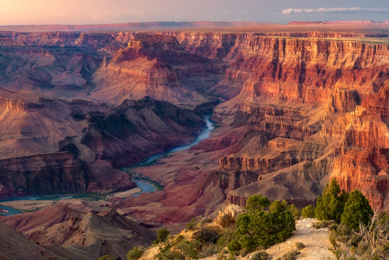
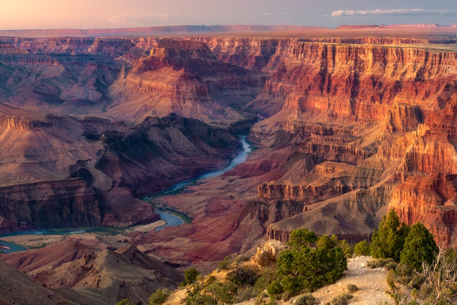

The state of Hawaii is an archipelago consisting of 137 islands, but the main Hawaiian Islands, where the majority of the population resides and where most of the tourist attractions are located, consist of eight primary islands.
Hawaii's unique geographical location in the middle of the Pacific Ocean gives it a tropical climate, diverse ecosystems, and stunning natural landscapes, making it a popular destination for tourists and a remarkable place to live. You can see examples how to enjoy in Hawaii Hawaii Islands, Hawaii Tourism, or Hawaii Travel Guide.
Grand Canyon


Geographical Location: Southwestern of United States
The Grand Canyon is a massive, steep-sided canyon carved by the Colorado River and is renowned for its immense size, stunning beauty, and intricate geological features. It covers a vast area in northern Arizona, and the canyon itself is part of the larger Grand Canyon National Park, which encompasses over 1.2 million acres of protected land. The park is divided into the South Rim and North Rim, each offering different perspectives and experiences of this natural wonder.
The Grand Canyon is not only a natural wonder but also a UNESCO World Heritage Site, drawing millions of visitors each year who come to marvel at its grandeur and learn about its geological significance. Whether you're interested in hiking, photography, or simply taking in the breathtaking views, the Grand Canyon offers a once-in-a-lifetime experience that leaves a lasting impression on all who visit. You can see examples of how to hike in the Grand Canyon Best of Grand Canyon Tour, National Park Service, or Grand Canyon.
Photo Gallery
 Visitors can zoom out to see more detail about Grand Canyon.
Visitors can zoom out to see more detail about Grand Canyon.
 Visitors are going to see the stunning natural landscapes of the Grand Canyon at the higher viewpoint.
Visitors are going to see the stunning natural landscapes of the Grand Canyon at the higher viewpoint.
 The Colorado River that flows through the Grand Canyon offers world-class white-water rafting experiences, attracting adventure enthusiasts from around the globe.

The Grand Canyon offers a once-in-a-lifetime experience that leaves a lasting impression on all who visit.
The Colorado River that flows through the Grand Canyon offers world-class white-water rafting experiences, attracting adventure enthusiasts from around the globe.

The Grand Canyon offers a once-in-a-lifetime experience that leaves a lasting impression on all who visit.
Los Angeles


Geographical Location: Southern part of the state of California
Los Angeles is known for its sprawling metropolitan area, diverse culture, and vibrant entertainment industry. It is situated on the west coast of the United States and is the largest city in California. Also, it is a popular tourist destination, with attractions such as Hollywood, Beverly Hills, Santa Monica Beach, and numerous cultural and entertainment venues.
Los Angeles is a city of dreams, where people come to pursue careers in entertainment, technology, business, and more. Its diverse and vibrant culture, along with its wide range of attractions and opportunities, make it a city that appeals to a broad spectrum of interests and lifestyles. You can see examples of how to enjoy the Los Angeles Things to do in Los Angeles, 33 Best Things to Do in LA, or Los Angeles Travel Guide.
Photo Gallery
 The Skyline of Los Angeles creates a diverse and beautiful view that shows the snow mountain behind and the city in front.
The Skyline of Los Angeles creates a diverse and beautiful view that shows the snow mountain behind and the city in front.
 The Los Angeles City Hall is not only a functional government building but also a symbol of the city's history and culture. Its striking architectural design and prominent location in downtown Los Angeles make it a must-visit landmark for both residents and tourists who want to appreciate its beauty and take in the breathtaking views from its observation deck.
The Los Angeles City Hall is not only a functional government building but also a symbol of the city's history and culture. Its striking architectural design and prominent location in downtown Los Angeles make it a must-visit landmark for both residents and tourists who want to appreciate its beauty and take in the breathtaking views from its observation deck.
 Downtown Los Angeles is the central business district and cultural heart of the city of Los Angeles, California. It's a vibrant and dynamic urban area that offers a wide range of attractions, from historic landmarks to modern skyscrapers, cultural institutions, and diverse neighborhoods.
Downtown Los Angeles is the central business district and cultural heart of the city of Los Angeles, California. It's a vibrant and dynamic urban area that offers a wide range of attractions, from historic landmarks to modern skyscrapers, cultural institutions, and diverse neighborhoods.
 The Hollywood Sign is a symbol of Hollywood's cultural and historical significance that continues to draw millions of visitors and remains a potent representation of the entertainment capital of the world.
The Hollywood Sign is a symbol of Hollywood's cultural and historical significance that continues to draw millions of visitors and remains a potent representation of the entertainment capital of the world.
 Beverly Hills is not only a city known for luxury and extravagance but also for its distinctive charm and timeless elegance. It has a rich cultural heritage and continues to attract visitors from around the world who seek a taste of its opulent lifestyle and upscale shopping experiences.
Beverly Hills is not only a city known for luxury and extravagance but also for its distinctive charm and timeless elegance. It has a rich cultural heritage and continues to attract visitors from around the world who seek a taste of its opulent lifestyle and upscale shopping experiences.